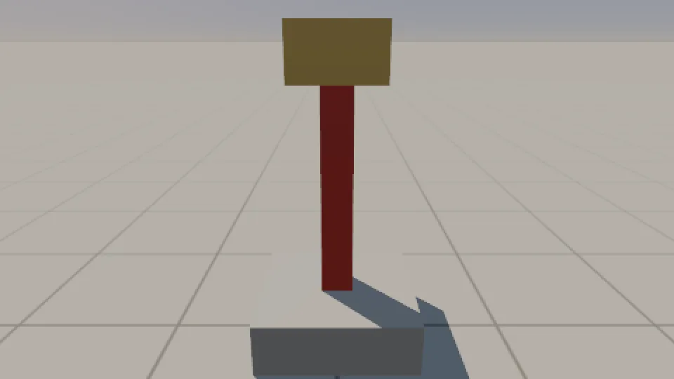
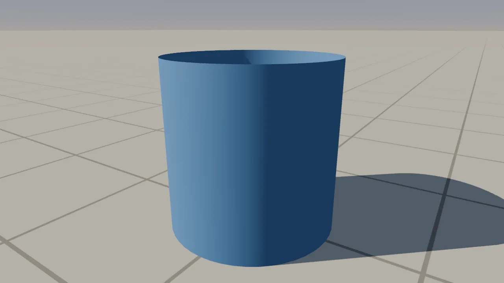
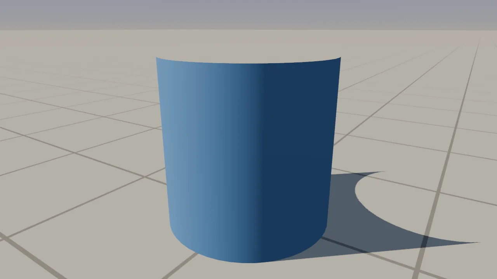
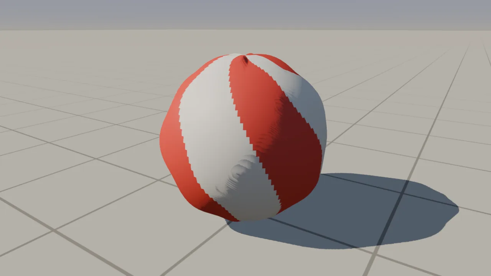
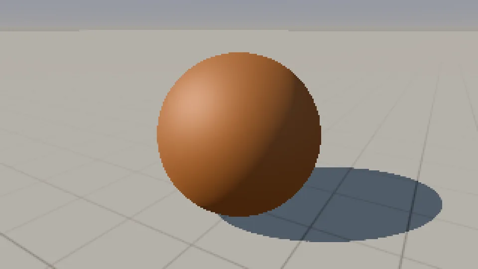
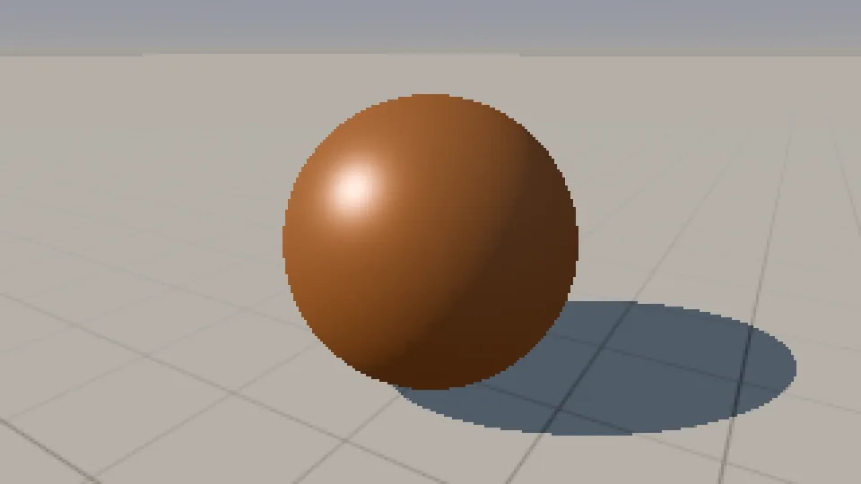
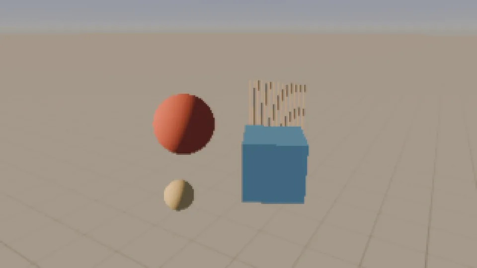
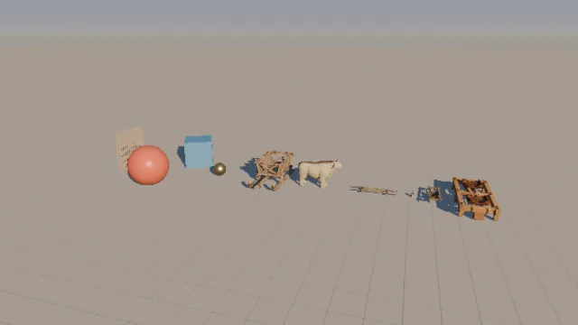
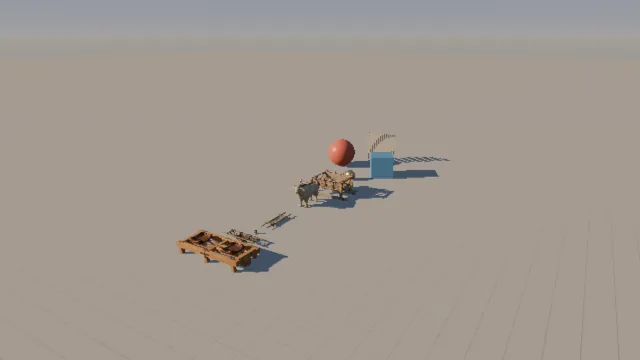

The engine can show, light and cook props, and a stand-in figure can now walk a small test ground. The first playable area is next.
Milestones
Newest first. Drag the sliders to flip between before and after.
First steps
Build 0fd041dBuild server (software renderer)
The engine can now be walked. A stand-in figure made of two grey shapes strolls over a small test ground with a ramp, a step down and a wall, under the engine's sun and shadows, with a camera following behind it. W, A, S and D move it, Shift runs, dragging with the left mouse button turns the camera, and the wheel moves it nearer or farther.
A scripted walk of 10 seconds, software renderer.
New build, frames 1, 121, 300, 450 and 620 of the scripted walk.
Design reference
A walking test for the engine: a figure on a small ground with a ramp, a step down, a wall and an orange square that fires a trigger when the figure steps into it.
Previous build
The previous build could only look at things. It had no walk scene at all.
New build
The world steps at a fixed 60 times a second and records its input, so a run can be replayed. Walking into the orange square makes the engine print one line. It did so at step 121, the step worked out by hand beforehand.
Result
Pass on the software renderer. The same input run twice gave exactly the same result at every one of 140 steps, with the same pictures. One extra key press at step 30 changed everything from step 30 on, as it should. A real window on a real GPU has not been run yet, and it has not been tried by hand yet.
Swap a prop, get the new prop
Build f2e27e6Desktop GPU (Radeon RX 6900 XT)
Cooking a model under the name of an existing one now clears every old piece first. A three-part test post replaced by a plain stone block came out identical to a fresh cook, checked on the desktop GPU.

Before replacingAfter replacing
Same camera, frame 6 of 12.Left to right: before replacing, after replacing, fresh reference.
Design reference
A low grey stone block, cooked fresh, is the target picture.
Previous build
Build a5b699c, checked earlier on the build server. The replacement failed and the old post stayed on screen. 73,385 of 129,600 pixels differed from a fresh cook at frame 12.
New build
The old parts are removed and the block appears.
Result
Match. On the desktop GPU, 0 of 129,600 pixels differ from the fresh cook in each of three compared frames.
Six props, still six props
Build f2e27e6Desktop GPU (Radeon RX 6900 XT)
The six-prop viewer was replayed on the desktop GPU with the new prop pipeline. Switching between Modern, Classic and a close-up gave exactly the same pictures as the shipped build.
Previous buildNew build
Classic close-up. Drag: nothing moves, and that is the point.
New build, frames 1, 2 and 4.
Design reference
The same six cooked props and the same ten scripted key presses.
Previous build
The shipped build, 2b34f73.
New build
The new prop pipeline, f2e27e6.
Result
0 of 230,400 pixels differ in all four views. Nothing changed, which was the goal.
Three prop fixes, one package
Multi-material models, closed seams and the same-name recook fix were folded into one small change of 15 files, ready to test together on a real GPU. Two-sided materials stay in the lab until a real asset needs them.
Surfaces you can see from inside
Build a5b699cBuild server (software renderer)
In a lab build, a thin surface marked two-sided now shows from both sides; it stays out of the main build until a real asset needs it. A lidless test barrel used to look like a hollow shell, with the ground showing through and a crescent shadow. Now the inside is drawn and lit, and the shadow is whole.


Previous buildNew build
Frame 12 of the test run.Twelve matched stills of a slow turn, previous build left, new build right.
Design reference
An open barrel with one blue material marked two-sided, meant to be seen from inside.
Previous build
The flag was ignored. 144 triangles, ground visible through the top, crescent shadow.
New build
The inner surface is added. 288 triangles, no warning, whole shadow.
Result
Pass on the software renderer. A real-GPU frame is still to come.
Simplified models stay closed
Build 8b28349Build server (software renderer)
When a model is cut down to fewer triangles, each material part now keeps the vertices along its open edge, so the parts still meet. A striped test buoy used to tear where red met white. It stays closed now.

Previous buildNew build
Frame 12 of the test run.Twelve matched stills of a slow turn, previous build left, new build right.
Design reference
A closed striped buoy of 36,480 triangles in two paint colours, with no openings.
Previous build
Parts reduced on their own to 1,335 and 887 triangles. The surface tore and 81 lit pixels showed inside its shadow.
New build
Edge vertices kept. 1,802 and 2,600 triangles, no tear, 0 lit pixels inside the shadow.
Result
Pass on the software renderer. One part is still over its triangle budget and is reported as such.
One model, several materials
Build 666d12aBuild server (software renderer)
A model that uses several materials now cooks into one part per material, and the viewer stands the parts together. Before, the cooker simply refused such a model. A test post with a stone base, a red post and a brass cap now shows each material correctly.
The test post and a stone block beside it.
Twelve stills of a slow turn, about 16 degrees.
Design reference
A signal-post test model: grey rough stone, red paint, brass metal.
Previous build
Refused with a plain message about three materials. Nothing to show.
New build
Cooked into three parts and drawn as one model, each with its own colour, metal and roughness.
Result
Pass on the software renderer. A real-GPU frame is still to come.
Recooks reset the material
Build 3d369afBuild server (software renderer)Laptop GPU (RTX 5070 Ti)
Recooking a prop with plain material settings now clears the roughness left behind by the previous cook. Before the fix, a test sphere kept its shiny spot and 6,743 of 57,600 pixels were wrong. After it, every pixel matched a fresh cook on the build server and on the laptop GPU.

Before the fixAfter the fix
Same-path recook, build server.

Roughness as a factorRoughness baked in
Laptop GPU. A factor and the same value baked into the texture look identical.
Design reference
A smooth test sphere with unit material factors is the reference.
Previous build
Build 8cb4de1 kept the old roughness. 6,743 pixels differed, by up to 100 of 255.
New build
Build 3d369af removes the stale setting. All 57,600 pixels match.
Result
Match on both renderers. Authored roughness and metallic values also match the same values baked into the texture.
WebP textures
Build 8cb4de1Laptop GPU (RTX 5070 Ti)
Props can now use embedded WebP images for their colour, metal-and-roughness and normal textures, with a PNG as a fallback when WebP is optional. On the laptop GPU both WebP cases matched the original PNG exactly.
Four runs, first frame of each.
Design reference
A test triangle with a 13 by 11 colour texture, cooked from a PNG.
New build
The same texels from WebP, required and optional.
Result
Both WebP cases match all 57,600 pixels. The deliberately different fallback changes 5,570, as intended.
Interlaced 16-bit textures
Build 171ef7dLaptop GPU (RTX 5070 Ti)
The prop cooker reads 16-bit PNG textures stored in interlaced order. Two versions of the same texture cooked to identical files, and the laptop GPU drew identical pictures from both.
Three runs, first frame of each.
Design reference
One textured triangle from an ordinary 16-bit PNG.
New build
The interlaced twin of the file, with the same samples.
Result
57,600 of 57,600 pixels match. Leaving the texture out changes 5,570, so the test can fail.
Safer GPU cleanup
Build 3f7f1b8Build server (software renderer)Laptop GPU (RTX 5070 Ti)
When the engine gives up waiting on the GPU, textures and buffers now keep their memory until it is safe to free it. Simulated failures passed on the build server, and a normal run on the laptop GPU drew the same picture as before. A real hardware timeout has not been seen yet.
Classic look, frame 1, laptop GPU.
Design reference
Ordinary rendering and shutdown should be unchanged.
Previous build
Build 84aab54 on the same scene.
New build
Build 3f7f1b8 on the same scene.
Result
Frame 1 matches pixel for pixel, with clean validation in both runs.
A lost display is reported honestly
Build 84aab54Laptop GPU (RTX 5070 Ti)
If the display connection dies mid-run, the app now saves the error and exits with a failure. Before, it logged the problem and then quietly reported success.
The last frame captured before the display was cut.
Design reference
A lost display should give a failure exit and a written error.
Previous build
Build d42a8de exited with success.
New build
Build 84aab54 exits with a failure and names the error at frame 2.
Result
Confirmed on the laptop GPU. The first frame before the disconnect is identical in both builds.
Intel integrated GPU: first light
Build 30216f2Intel integrated GPU
The six-prop viewer drew its first frame on the Intel integrated GPU in about 1.7 seconds. Then the window system refused the image handoff and closed the connection, so the full 12-frame run did not finish. Two tries gave the same result, so this one stays open.
The saved frame from the first attempt.
Design reference
The viewer should keep a visible window alive for all 12 frames.
Previous build
An earlier build drew its first frame on the laptop GPU after 1.6 seconds.
New build
Intel drew frame 1 in 1.77 and 1.72 seconds, then the display connection closed.
Result
Not passed. Whether the picture ever appeared on screen is unverified.
Pick a look from the command line
Build 30216f2Build server (software renderer)Laptop GPU (RTX 5070 Ti)
The screenshot tool takes a starting lighting preset, labels the device and preset in its report, and keeps earlier results when it is given bad input.

ModernClassic
Frame 1 of each preset, build server.
Design reference
Modern adds cast shadows and shiny highlights. Classic uses sun and ambient light only.
New build
Two separate runs start the same scene in Modern and in Classic.
Result
Both presets rendered with clean validation. A 120-frame window on the laptop GPU matched its replay at frames 1, 60 and 120.
A real window matches its replay
Build 15fa3abLaptop GPU (RTX 5070 Ti)
A 120-frame run in a real window on the laptop GPU was replayed from its recorded key presses. Frames 1, 60 and 120 matched pixel for pixel, with Modern, then Classic, then Modern again.
Modern, frame 1Classic, frame 60
Real window, laptop GPU.
Design reference
Classic and Modern should light the same six-prop scene.
New build
A real window and a headless replay of its recorded key presses, 120 frames each at 1280 by 720.
Result
All three compared pairs match, with clean validation.
Cleaner shadows at low sun
Build 19f34f6Laptop GPU (RTX 5070 Ti)
Shadow tests now use the true surface instead of the bumped one. A striped test board lit by a sun 12 degrees above the horizon used to pick up false bands in its shadow. The bands are gone, and props are lit in a single pass.
BeforeAfter
Striped board, sun 12 degrees high.
Design reference
The board should look the same with and without casting a shadow on itself.
Previous build
Build 44b48ac. 960 of 3,600 pixels in the test area were off by more than one level.
New build
Build 19f34f6. 0 of 3,600 pixels are off.
Result
Fixed on the laptop GPU. The largest error went from 6 of 255 to 0.
Modern and Classic, side by side
Build b676149Laptop GPU (RTX 5070 Ti)Build server (software renderer)
The first relight check ran on both the laptop GPU and the build server. Modern adds cast shadows and a bright highlight on the red sphere. Classic keeps sun and ambient light only, so the shadows vanish and the sphere looks matte.

ModernClassic
Laptop GPU.
ClassicModern
Close-up, same held camera, build server.Four captures held for two seconds each.
Design reference
Two presets light the same scene. Modern adds shadows and highlights, Classic does not.
New build
A key press switches presets in the same scene with the camera held.
Result
Modern shows shadows and a highlight, Classic shows neither. Clean validation on both renderers.
A better opening view
Build b676149Build server (software renderer)
The first camera put the six props in a crowded line. The new opening view spreads them across the frame, so several props that used to overlap their neighbours now stand apart.

Previous buildNew build
Opening frame, Modern look, build server.
Design reference
The same six props and shapes should all be visible together for lighting comparisons.
Previous build
Build fe51e8f. The props recede into a line, and several silhouettes overlap.
New build
Build b676149. The props spread across the frame.
Result
Better separation. The smallest prop still needs the focus key for a close look.
A big review, then fixes
Build 7b33800Laptop GPU (RTX 5070 Ti)
A broad review of the engine led to several fixes. The viewer no longer keeps a second copy of every model: six models use 0.47 GB instead of 2.12 GB. The cooker accepts far more models, and a window somebody is watching now runs by real seconds, where a 144 Hz display used to run the scene 2.4 times too fast.
A frame cap and a rest mode
Build 2035dd8
A window can now cap its frame rate, and in trials of up to 30 minutes on a laptop it held 30 frames a second for 23 minutes. A shown window can also rest when its picture is still.
Classic joins Modern
Build 60a7ccb
The renderer gained a second look beside Modern. Classic imitates a game from about 2003, with no shadows, no shine, no normal maps and no texture tricks for small bumps.
Crisp shadows, no cut-through
Build 4e811edLaptop GPU (RTX 5070 Ti)
The sun's shadow map grew to 8192 texels a side on a real GPU, so close-up shadow edges went from stair-steps to sharp. The nearest drawing distance is now 1 cm, so a prop zoomed up close is no longer cut open.
Faster loading
Build 4b72b9f
The first frame of six whole models now arrives after about 1.8 seconds instead of 5.4.
Viewer controls
Build ed8fb0a
The prop viewer got a mouse wheel zoom, right-drag panning, a focus key and a camera that stays above the ground.
The whole test suite passes
Build 8be8f75Desktop GPU (Radeon RX 6900 XT)
1,342 tests and 24 documentation tests pass on the desktop GPU.
Quest log
Engine features, ticked off as they are built and checked.
38% of the quest log is done (13 of 34)
Six props, one load (done)
Six full models appear in about two seconds instead of five.
Steady frame rate (done)
A frame cap held 30 frames a second on a laptop for over twenty minutes.
Cool idle rendering (not done yet)
The window should rest when nothing moves. Still being measured on real hardware.
Two looks, one key (done)
Press one key to flip between modern lighting and a plain classic look.
Camera controls (done)
Orbit, zoom, pan and focus, with the camera kept above the ground.
Close-ups without cut-through (done)
Zooming right up to a prop no longer slices it open.
Crisp sun shadows (done)
Shadow edges stay sharp, even in close-ups.
Surfaces seen from behind (done)
Surfaces viewed from the back are handled instead of vanishing.
Two-sided surfaces (not done yet)
Thin walls show from both sides. Works in the lab, not shipped yet.
See-through materials (not done yet)
Glass and other see-through surfaces still need renderer work.
Sky light (not done yet)
Soft light from the whole sky, not only the sun.
Contact shading (not done yet)
Gentle darkening in creases and corners so objects feel grounded.
Richer materials (not done yet)
More of the material model, such as glow and transparency.
Sky, haze and ground (not done yet)
A believable horizon to stand in.
Colour and tone (not done yet)
Final colour grading so a frame feels finished.
Quality levels (not done yet)
A medium setting that trades a little detail for speed.
Smart upscaling (not done yet)
Draw fewer pixels and show more of them.
Reference shapes (not done yet)
Match the shapes of a reference picture using plain grey materials.
Reference lighting (not done yet)
Match the lighting of that reference picture.
Reference chart (not done yet)
Check the engine against a reference chart in one view.
Final side-by-side (not done yet)
Put the engine, a reference render and the target picture side by side.
Props lit once (done)
Props are lit in one pass instead of two, with the same picture.
Steadier bumpy shadows (done)
Shadow tests use the true surface, so small bumps stop causing stripes.
Smoother shadow edges and sky (not done yet)
Remove faint steps in shadow edges and the sky gradient.
Bad numbers fail loudly (done)
A broken scene value is reported instead of turning the picture black.
Failed runs keep their trail (done)
A run that fails still saves the keys it was given and the error.
Clean shutdown (done)
The engine cleans up safely even when the GPU stops answering.
Tidier frame loop (not done yet)
Simplify how each frame is tracked.
Scenes in GPU memory (not done yet)
Keep prepared scenes resident on the graphics card.
Prop converter coverage (not done yet)
The prop converter still refuses a few kinds of model.
Real-time clock, smart device pick (done)
A visible window runs by real seconds and hidden runs pick a usable GPU.